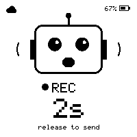
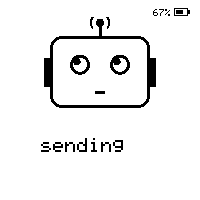
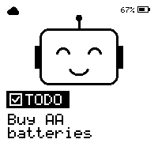
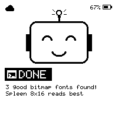

Hold the button. Say the thing. Let go.
paperbot is a small e-paper robot that turns what you say into notes, todos, reminders and researched answers.
Its face tells you what's happening.
Drawn by hand, pixel by pixel, for a 200 × 200 screen.

Listening
Sending
Filed
Researched
Everything lands in one quiet list.
On your laptop or phone. Tick off todos, see when reminders are due, and read research answers right in the list.